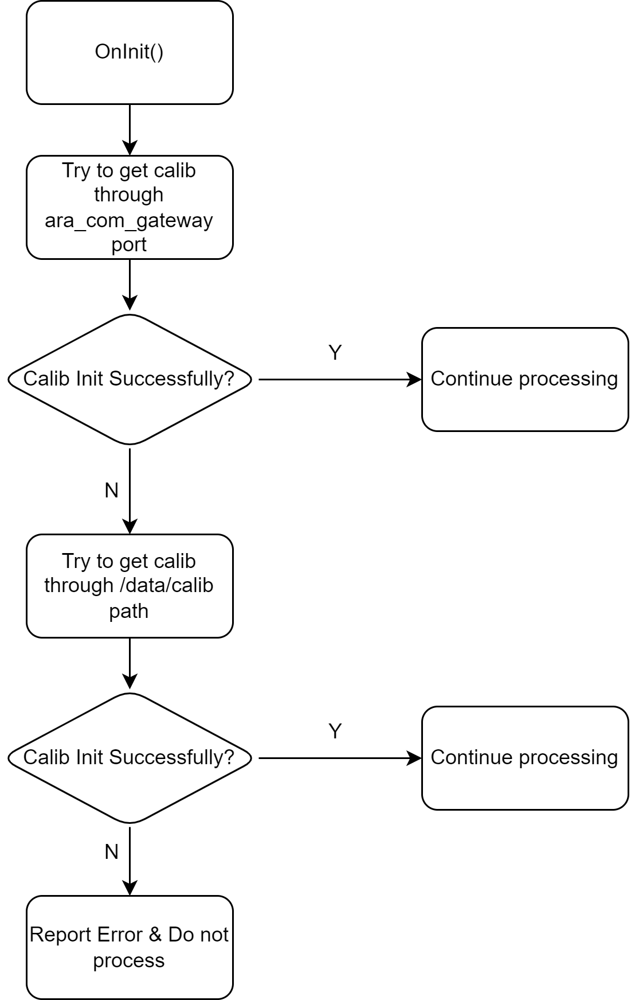

Persistency Data Handling for Calibration of Parking VIPER LIPER
background
At present, the calibration file obtained by ViperParking & liverparking is Engineering phase scheme: Get all the calibration files from Sample's absolute path/Data/Calib.
Need to adapt Mass production plan: Aracomgateway obtained the calibration data from Persistency Server Sending the user process to the user process (Including viperparking liverparking), now Aracomgateway has been realized.And the connection of the PORT port is well connected.
Per3 provides W3_TRANS_HELPER/0.1.5@pjw3/dev, which has supported data from the Public Interface port of Aracomgateway, and also supports/data/Calib.
DDD - 230424_EoL Calibration: camera intrinsic&extrinsic and lidar extrinsic storage manner . Previous 4/24 Selection Scheme 3
Target
Adjusting ViperParking & Liperparking Runnable code uses trans_helper to achieve initialization, adapting to production schemes, and also requires the current engineering stage scheme, because the 28 AUG 2023 engineering scheme is still in use.
Processing logic priority is mass production plan> Engineering Plan> Read failure treatment.
04 SEP 2023 Amendment, because Aracomgateway -》》 VIPER cannot guarantee good data during the onInit stage, so it will be more secure when this work must be done when it is onUPDATE.And there is no engineering solution, because if you read the PORT failure in Onupdate, you will always try to read Port.

Note: The logic of this flowchart should be abstracted into a function logic.
Execution item
Code modification implementation correlation
Please submit it to AOS PERception feature/CNWVIII-59458-per-perception-calibration-adation
Root warehouse submit feature/CNWVIII-59072_Calibration_Persistency_Solution
|
Runnable/Modules |
status quo |
Modification |
Ticket |
Comments |
|
NrcsStitchMtcnn |
|
|
LIU Dingjie (XC-AS/PJ-WIN-PER5) 03 Sep 2023 CNWVIII-59120 - Jira issue doesn't exist or you don't have permission to view it. |
The splicing module has changed a lot, and another Tick was built |
|
FrontViewPixelMtBoard |
|
|
29 Aug 2023 CNWVIII-59120 - Jira issue doesn't exist or you don't have permission to view it. |
|
|
FrontView3dObjDetBoard |
|
|
30 Aug 2023 CNWVIII-59118 - Jira issue doesn't exist or you don't have permission to view it. |
Is it necessary to switch to trans_helper as a coordinate conversion? no |
|
Nrcs3dObjDetBoard |
|
|
30 Aug 2023 CNWVIII-59118 - Jira issue doesn't exist or you don't have permission to view it. |
Current trans_helper does not support column surface development |
|
LiperMtcnn |
|
|
30 Aug 2023 CNWVIII-59119 - Jira issue doesn't exist or you don't have permission to view it. |
Is it necessary to switch to trans_helper as a coordinate conversion? no |
|
ViperLaneFusion |
|
|
30 Aug 2023 CNWVIII-59121 - Jira issue doesn't exist or you don't have permission to view it. |
|
|
ViperFreeSpaceFusion |
|
|
30 Aug 2023 CNWVIII-59122 - Jira issue doesn't exist or you don't have permission to view it. |
|
|
Public module abstract handle |
|
|
30 Aug 2023 CNWVIII-59458 - Jira issue doesn't exist or you don't have permission to view it. |
|
|
trans_helper init status |
|
|
ZHANG Yichi (XC-AS/PJ-WIN-PER3) HU Paul (XC-AS/PJ-WIN-PER3) 30 Aug 2023 CNWVIII-59462 - Jira issue doesn't exist or you don't have permission to view it. |
|
|
ipm_stitch |
|
|
LIU Dingjie (XC-AS/PJ-WIN-PER5) 03 Sep 2023 CNWVIII-59457 - Jira issue doesn't exist or you don't have permission to view it. |
|
Integrated joint testing related
|
Workplace |
details |
Ticket |
Comment |
|
Select a module and upstream Persistency Server & Aracomgateway joint |
|
MAO Donny (XC-AS/PJ-WIN-PER5) YANG Chen (XC-AS/PJ-WIN-PER2) QIAN Lilong (XC-AS/PJ-WIN-MW1) 31 Aug 2023 |
XU Joe (XC-CP/ESW5-CN) Existing plan test? |
|
All other modules are integrated and verify the correctness |
|
MAO Donny (XC-AS/PJ-WIN-PER5) 03 Sep 2023 PENG Huidong (XC-AS/PJ-WIN-PER5) 01 Sep 2023 MA Haitao (XC-AS/PJ-WIN-PER5) 01 Sep 2023 |
|
Note:
The following Runnable does not have the needs of the use file.
ViperSensorProc
FisheyeMtcnnBoard
ImageMotBoard
ViperImageOdd
LiperPost
LidarMot
OPL
FrontView3dObjdetboard & LIPERMTCNN is It NECESSARY to Switch to Trans_Helper as a coordinal conventions?
PROS: Reuse wheels, reduce errors
Cons: The workload with code adjustment
Is it necessary to modify the Viperparking architecture and be obtained by a single Runnable (Preproc)?→ No, use the Common module to process initialization
Dependent item: CCB architecture changes
PROS: The responsibilities are clear. The initial logic of the joint adjustment does not need to be repeatedly verified by the other.
Cons: There is a certain coupling (initialized logic) with the architecture, and there are more workloads that adapt to code.